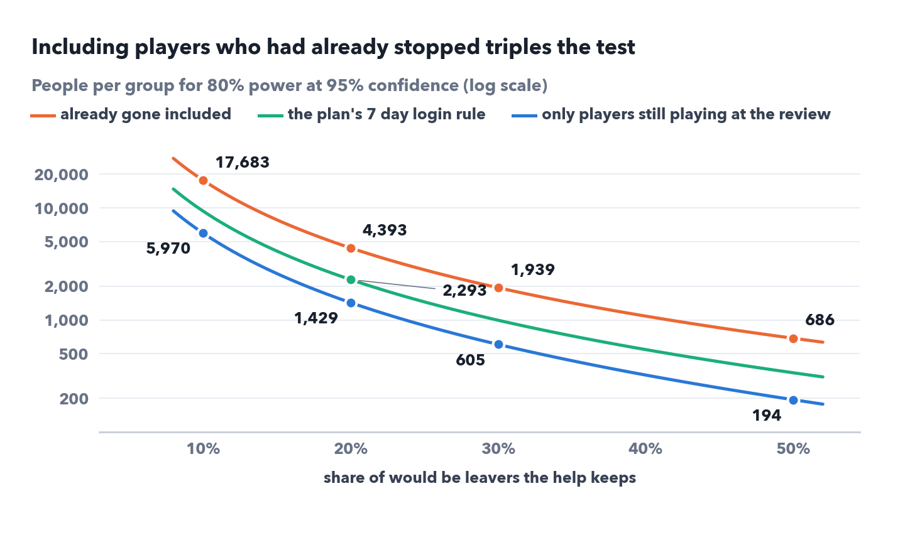
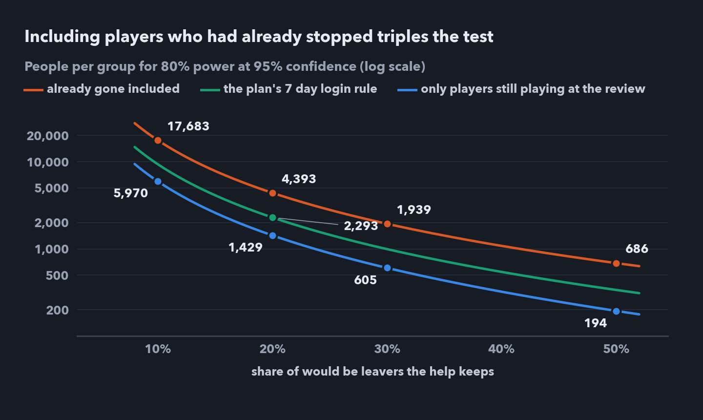
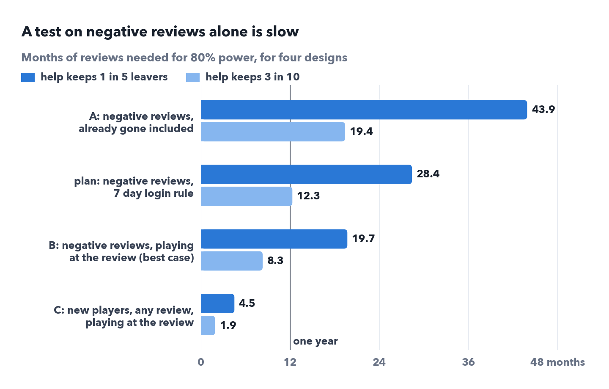
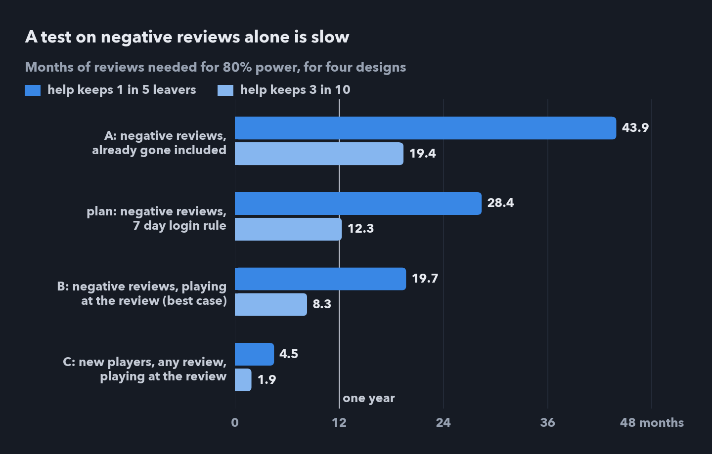

VRChat retention case study | Part 1: Who stays | Part 2: Who leaves sooner | Part 3: A fair test
Parts 1 and 2 show who leaves and when, but not what would make anyone stay. This part designs an experiment for the lead Part 2 ends on, sizes it with the same data, and says what I would run.
At a glance
Every finding in Parts 1 and 2 is an association, and help given only to the players someone expects to recover would look effective even if it did nothing. Random assignment breaks that link: it makes the two groups comparable on average, with any remaining differences due to chance, so a difference in outcomes can be put down to the help rather than to who received it. The size of the test controls the chance. The hypothesis to test: among new players who leave a negative review after playing in the 7 days before it, help at that moment raises the share who play again between day 76 and day 90. The 7 day rule is how login data can approximate who is still playing at the review (section 2).
The lead from Part 2 is help for new players, 1 to 20 hours at the review, at the moment of a thumbs down. I leave out players under 1 hour: about half of their negative reviews came after they had already stopped, and help for someone who has barely played is onboarding, a different product with its own test. I also leave out the July 2022 protest week, 25 to 31 July, where negative reviews went with no extra risk of leaving in the first two years (Part 2). Its negative reviews from new players came more often from people already gone, 34.6% against 27.3% in other weeks, which is why the share below sits under Part 1's 28.7%.
| New players with a thumbs down, outside the protest week | Value |
|---|---|
| Reviewers | 12,629 |
| Already stopped when they wrote the review | 27.3% |
| Still playing at day 90, everyone | 58.0% |
| Still playing at day 90, if playing at the review | 79.8% |
Two facts shape everything below. More than a quarter had stopped before writing or editing, so no help in game can reach them, and they dilute any effect. And among the players still there at the review, leaving is fast: about half of the leaving by day 90 happens within 3 days, nearly 4 in 10 on the first day, and 364 of the 1,831 who leave, about 20%, had their last session within an hour of the review. To reach them as well, the help has to be ready at the review itself: shown at once in game if the player is online, or else at the first login after the review, which some of them never make. Later help can still reach the others, at the cost in size shown in section 4.
Eligibility can only use what is known when the review arrives. Steam reveals who was already gone only in hindsight, and so would any data, since a session is the last one only once no other follows. VRChat's login data can approximate it with a rule such as at least one session in the 7 days before the review. That drops most of the already gone, but 1,006 of these 3,450, about 3 in 10, wrote within a week of their final session and would pass it. If everyone still playing at the review passes, which this data can't check, about 90% of those let in are still playing; any who fail it make the test slower.
A live test also needs one trigger moment per player. Parts 1 and 2 start each clock at a review's last edit, which is known only in hindsight. The test triggers instead at the first moment a player has an eligible negative review, newly posted or edited to negative, and never again, so each player enters once. For the 82% of these reviews never edited, that is the same moment as the clock behind the sizing; for the rest, Steam keeps only the final review, so the data can't show when it first turned negative.
The primary measure, fixed in advance, is day 76 to 90 activity: any play from day 76 to day 90 after the review, in VRChat's login data. It is the login counterpart of the day 90 share used throughout this series, and it can be read on day 90 itself. Breaks push it below the Steam figure and play outside Steam pushes it above, but the same definition applies to both randomised groups, so the difference between them is still a fair comparison. The effect to estimate is that difference between everyone assigned to help and everyone assigned to none, each player counted in the group they were assigned to, whether or not they saw the help: the intention to treat (ITT) effect. Secondary measures guard against misreading it. Retained days in the first 180 say what the help is worth. Retained days are the calendar days from the review to the last observed session, capped at the horizon, here 180: they measure how long players stay, not how many days they play. Day 166 to 180 activity, the same 15 day window at day 180, and the curves past day 90 show whether it keeps players, only delays leaving, or only makes them play more often, which a two week window alone can't tell apart.
Sizing uses the standard test for two shares, two sided at 95% confidence, with 80% power. For planning I state the effect as the share of would be leavers the help keeps. No one can tell who those leavers are, and the test doesn't need to: it estimates the ITT difference in day 76 to 90 activity, and the planning figure translates into it. Among players still playing at the review 20.2% leave by day 90, so help that keeps 1 in 5 of them lifts the day 90 share by 4.0 points. These shares come from each player's last observed session on Steam, which can't reproduce the login measure exactly, so they are a planning proxy: the final size has to be recomputed from VRChat's login data with the exact measure. The 1 in 5 is a planning target, not an estimate of the effect I expect. Who is let in changes both the lift and the day 90 share the test starts from:
| Who is let in | only those still playing (best case) | the plan's 7 day rule | already gone included |
|---|---|---|---|
| Already gone | 0% | 9.9% | 27.3% |
| Day 90 share without help | 79.8% | 71.9% | 58.0% |
| Lift for 1 in 5, points | 4.0 | 3.6 | 2.9 |
| Players per group | 1,429 | 2,293 | 4,393 |
The already gone cost more than their numbers suggest. They can't be helped, so they shrink the lift, and since they won't be playing at day 90 in either group, they pull the day 90 share toward one half, where a share varies most from sample to sample. On the plan's rule the smaller lift alone multiplies the size by one over 0.9 squared, taking the best case's 1,429 to about 1,800; the lower day 90 share takes it to 2,293. With every already gone player let in, 27% of the group, the size triples.


The size grows with one over the lift squared, so small effects are expensive: help that keeps 1 in 10 leavers would need 5,970 players per group even in the best case, about 7 years at the 145 a month still playing at the review. And 1 in 5 is more than the whole thumbs gap at day 90: among new players still playing at the review, 82.6% of thumbs up reviewers are still playing at day 90 against 79.8% of thumbs down ones, and closing that 2.8 point gap would keep about 1 in 7 leavers.
Timing costs as much as strength. Keeping 1 in 5 of the leavers still there when the help lands needs 2,293 per group on the plan's 7 day rule if it lands at the review, about 3,600 an hour later and 5,900 a day later; in the best case the same delays take 1,429 to 2,250 and 3,750.
The sizes also assume every player still playing in the help group sees the help. If only some do, then under the simple planning assumption that missing the help dilutes the effect in proportion, the lift shrinks by that share and the size grows with about one over it squared: if half see it, about four times as many players, and would be leavers are the least likely to log in again. Adjusting for playtime and language adds little information in this already narrow group, so it is unlikely to recover much of the lost power; recent play, which this data lacks, may do more. The main analysis therefore stays as assigned, the ITT difference, and for planning the expected share who see the help goes into the assumed lift, and so into the size. I would record, in both groups, when the help was shown or would have been shown, to measure delivery and how much exposure was lost. Comparing only the players who actually saw the help with everyone else would break the randomisation, since seeing it depends on coming back.
Who is still there, when the help lands and who sees it matter as much as the help's strength: letting in every already gone player triples the size, help that lands a day late multiplies it by about 2.6, and help that only half the players see quadruples it, about what halving the strength does.
A size only means something next to the rate at which eligible players arrive. I size with about 200 negative reviews from new players a month, between the 165 a month of January 2023 to July 2025 and the 222 of September 2025 to July 2026, so about 145 a month are still playing at the review and about 161 a month would pass the plan's 7 day rule; and with about 830 new players a month who write any review, from January 2023 to July 2025.


On the plan as written, help that keeps 1 in 5 leavers needs 2,293 players per group, about 28 months of reviews at 161 a month if the help lands at the review itself, and the day 90 answer comes three months after the last player joins. Keeping about 3 in 10 would collect the players in about a year, 12.3 months, with the answer three months after that. The baseline pools 2017 to 2025. Recent reviewers still playing at the review leave sooner (76.8% still playing at day 90 since 2023, against 79.8% pooled), which leaves more leavers for the same help to keep, and they arrive faster (about 245 a month in early 2025). The three weeks after the protest week, the rest of the 2022 protest wave that the plan's protest rule would set apart, raise the pooled day 90 share: it is 78.6% without them, which means more leavers for the test than the pooled sizing assumes. So if the help keeps the same share of leavers, the current population would need fewer players and less time than this pooled sizing, and the final sizing should use VRChat's current baseline.
Opening the test to every new player who writes any review and is still playing (C), with help after any review, would take about 4.5 months of reviews if that broader help also keeps 1 in 5 leavers: about 740 of the 830 a month are still playing at the review, and 82.3% of them are still playing at day 90. Like B, this assumes VRChat knows exactly who is still playing. That answers a wider question, help for new players in general; the effect for players who complained would still need the negative review sample. D, a login based test on every new player, reviewer or not, would be wider again, and its speed depends on numbers this data doesn't have.
Negative reviews are good for finding the lead and sizing the test, but slow to run it on. A faster test has to widen the question, so the plan has to say which question it answers.
A simulation that draws real players at random from those still playing at the review, the best case, with help that keeps 3 in 10 leavers and 2,000 experiments per size, confirms the arithmetic: 79% power at 600 per group against the 80% the formula promises at 605, and 49% at 300. On the plan's 7 day rule the same effect needs about 990 per group. It makes the same assumptions as the formula, so the real risks to power sit elsewhere: VRChat's own baseline, players who never see the help, and how fast leavers go. Even a well sized test misses a real effect one time in five, so a single null result from an undersized test says little.
As an illustration, help that kept 3 in 10 leavers would add between about 4 and 19 retained days per player in the help group over the next year, from a cautious assumption to a deliberately generous one: 4 if the kept players stop right after day 90, 19 if each instead follows the future of a randomly chosen player still playing at day 90, which is generous for people about to leave (272.6 days without help against 291.2 with it in a large simulated sample). In people the prize is small: about 145 players still playing at the review arrive a month and about 29 of them leave by day 90, so help that keeps 3 in 10 keeps about 9 players a month, and 1 in 5 about 6. Multiplied by the value of a retained day, that sets the bar the help's cost has to clear.
The readout is fixed in advance. Primary: the ITT difference in day 76 to 90 activity between the two groups, with its 95% confidence interval. Beside it, for precision, the same ITT difference adjusted for playtime and recent play, specified in advance. Secondary: day 166 to 180 activity, retained days in the first 180, and the survival curves, to see when the groups part, with a log rank test across the whole curve.
Simulated illustration, not a result
One simulated best case experiment with 600 per group reads 79.7% against 86.0%: a lift of 6.3 points with a 95% confidence interval of 2.1 to 10.6, and a log rank p value of 0.020.
Even with a 6 point lift, the 95% interval runs from about 2 to 11 points, so a test sized to detect an effect can say that help works but not whether it pays; if the decision needs the value, the plan should size for the smallest lift that pays.
| Part | Decision |
|---|---|
| Who | new players with 1 to 20 hours at a negative review and at least one session in the 7 days before it, by login data |
| Trigger | the first eligible negative review per player, newly posted or edited to negative; later edits never trigger again, so each player enters once |
| Protest waves | a week with at least 100 negative reviews from new players and over three times the median of the eight weeks before, checked when each week ends; its players are randomised as usual and reported apart from the main estimate, so the flag never changes anyone's assignment. On past data it flags one wave, 25 July to 21 August 2022: the protest week and the three weeks after it |
| Assignment | random, 50/50, at the trigger, in small blocks within each calendar week so the groups stay level over time; playtime and recent play recorded |
| Help | one clear action shown at once in game if the player is online at the review, or else at the first login after it; the same for everyone in the help group, given privately |
| Exposure | the moment each player saw the help, or would have seen it under the same delivery rule, recorded in both groups for delivery reporting |
| Estimand | the difference in day 76 to 90 activity between the groups as assigned (ITT) |
| Primary measure | day 76 to 90 activity: any play from day 76 to day 90 after the review |
| Secondary measures | day 166 to 180 activity (any play in that window); retained days in the first 180; survival curves with a log rank test |
| Guardrails | complaints and reports about the help, and refunds, watched for harm alongside the primary measure; changes to the review only described, and the help never asks for one |
| Size and length | redone with VRChat's own baseline, the share who see the help and the smallest lift that pays; interim looks and stopping boundaries fixed in advance, and a stop for harm if the guardrails move |
| Subgroups | chosen in advance, for example English or not, and only described |
Two rules protect the result. First, check the integrity of the randomisation with a sample ratio check: if the split between the groups is one that chance would produce less than once in 1,000 experiments of this size, given the planned 50/50, assignment and logging are checked. It is a diagnostic, never a reason to reassign players, and by itself it doesn't prove the randomisation failed. Baseline characteristics are reported by group; chance imbalances there are expected and don't invalidate the test. Second, look only at the interim points fixed in advance, because checking every week and stopping at the first good result inflates false wins. And since both groups are assigned within the same calendar weeks, a shift like 2025's reaches both alike.
Negative reviews were the right place to find and size the lead, but they are too slow for the first test: on them alone, the test collects its players in about a year only if the help's effect is twice the whole thumbs gap, for a prize of a few players a month. So what I would run first is wider: help for every new player who writes any review (C), which this data sizes at about 4.5 months of reviews in the best case, with the negative reviewers described inside it. D, a login based test on all new players, reviewer or not, would answer a wider question again. Either would run on VRChat's own new players, so its size and baseline have to come from VRChat's login data. The plan above stays the design for the narrower question, whether help works for the players who complained.
I can say
I cannot say
In one sentence
A randomised test is the cleanest way to show whether help at a new player's negative review works, and the numbers make that test hard: even with help ready at the review itself, the planned test needs about 28 months of reviews, plus three to the answer, for an effect larger than the whole thumbs gap, so I would first test help for every new player who writes a review.